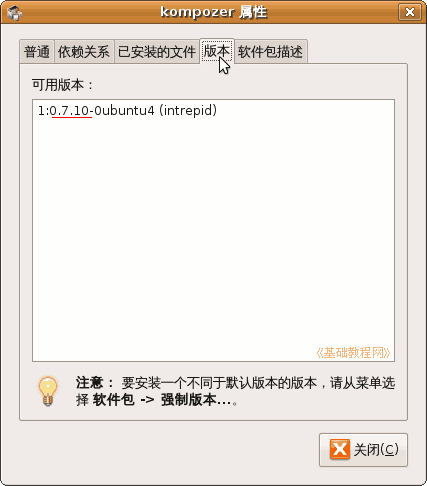
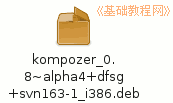
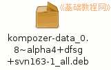
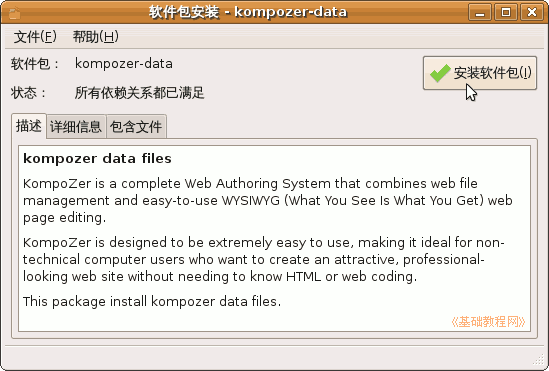
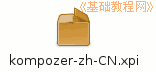
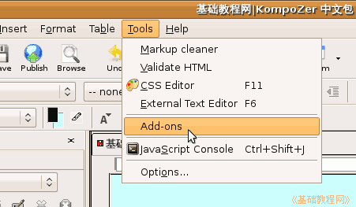
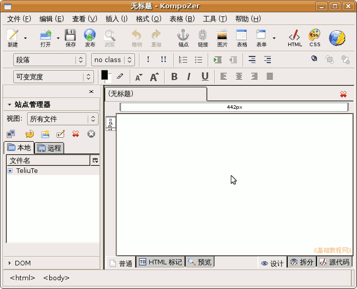

KompoZer 操作基础教程
作者：Teliute 来源：基础教程网
基础1 - 安装和设置简体中文 返回目录 下一课KompoZer是一个免费的网站制作软件，可以在Ubuntu/linux 和 Windows 平台上运行，下面我们来看一个练习；
1、下载软件包
1）官方下载：http://KompoZer.net/点，进入后在右侧可以找到下载download，按提示下载，
sourceforge 下载：http://sourceforge.net/projects/kompozer/files/
华军 Windows 版下载：http://www.onlinedown.net/soft/85266.htm
2）debian下载：kompozer 拉至页面最下边，找下载列表
3）还要下载一个对应的 kompozer-data 文件
2、安装KompoZer
1）如果新立得中的版本较高，可以直接在里面标记安装，搜索后查看属性可以看到版本；

2）自己下载后得到两个个deb安装包，Windows 的是压缩包，解压后直接可以运行程序，不用安装；
 
3）依次双击安装 kompozer-data.deb、kompozer.deb，在出来的安装窗口，稍等点右上角的绿色勾“安装软件包”，按提示操作；

3、设置简体中文包
1）下载简体中文包，官方下载：http://kompozer.sourceforge.net/l10n/langpacks/
本站常用教具中也有下载：http://teliute.org/jiaoju/kz_zh-CN/kz_zh-CN.html
2）下载以后得到一个 xpi 文件，这是一个扩展文件，需要在程序里安装；

3）在“应用程序 - 编程”菜单中，启动 KompoZer，再点菜单“Tools － Add-ons －Install ”，安装下载的扩展，详细操作请参阅： http://teliute.org/jiaoju/kz_zh-CN/kz_zh-CN.html

4）重新启动 KompoZer 以后就是简体中文界面了；

本节学习了KompoZer的安装和设置简体中文的基本方法，如果你成功地完成了练习，请继续学习下一课内容；
本教程由86团学校TeliuTe制作|著作权所有
基础教程网：http://teliute.org/
美丽的校园……
转载和引用本站内容，请保留版权信息和本站链接。